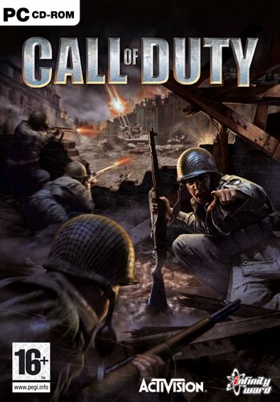

Capitalizing on the success of Medal of Honor (1999), Infinity Ward developed and released the first Call of Duty game, released on PC and XBox 360. Set in World War 2, this entry further solidified the general interest of shooter games set in World War 2. Considered a financial success, Infinity Ward would be called again by its publisher Activision to create a sequel.